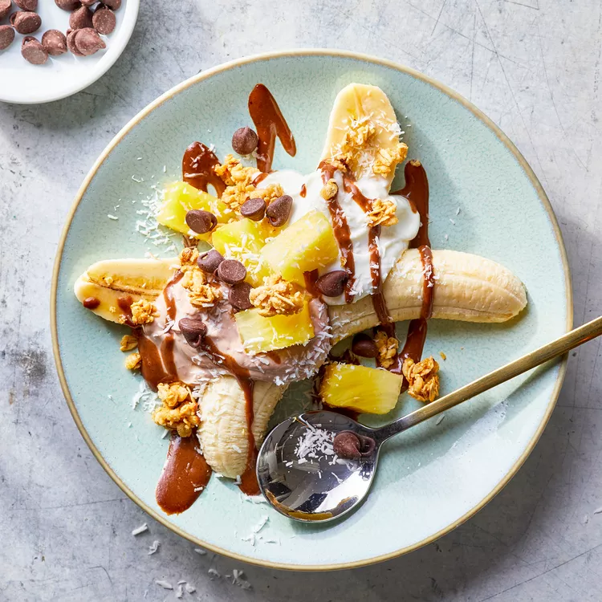

Breakfast Banana Split
Eating dessert for breakfast has never been easier, thanks to this twist on a classic banana split.
Preparation time
- Total: Approximately 20 minutes
- Preparation: 15 minutes
Ingredients
- ¼ cup almond butter
- 1 tablespoon cacao powder
- 2 tablespoons pure maple syrup, divided
- ¼ cup heavy cream
- 4 ripe bananas, peeled and halved lengthwise
- 1 cup low-fat coconut strained yogurt
- 1 cup whole-milk chocolate strained yogurt (see Tip)
- ½ cup diced pineapple
- 4 tablespoons granola
- 2 tablespoons chocolate chips,unsweetened shredded coconut
Instructions
- step1: Whisk almond butter, cacao powder, water and 1 tablespoon maple syrup in a small bowl until smooth.
- step2: Whisk cream and the remaining 1 tablespoon maple syrup in a small bowl until soft peaks form.
- step3: Arrange 2 banana halves on each of 4 plates. Use an ice-cream scoop to divide coconut and chocolate yogurts among the bananas. Drizzle the almond sauce over the yogurt. Divide pineapple, granola, chocolate chips and coconut among the banana splits. Top with the whipped cream.
- step4(enjoy): just sit and enjoy peacefully. TIP: To make your own chocolate yogurt, stir 1 Tbsp. cocoa powder into 2/3 cup vanilla strained yogurt.
Nutrition
The table below shows nutritional values per serving without the additional fillings.
| Calories | 514cal |
|---|---|
| Carbs | 60g |
| Protein | 17g |
| Fat | 26g |